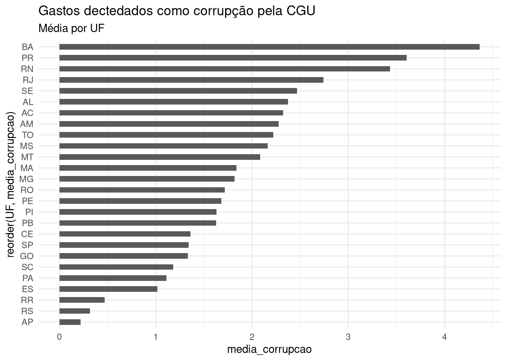
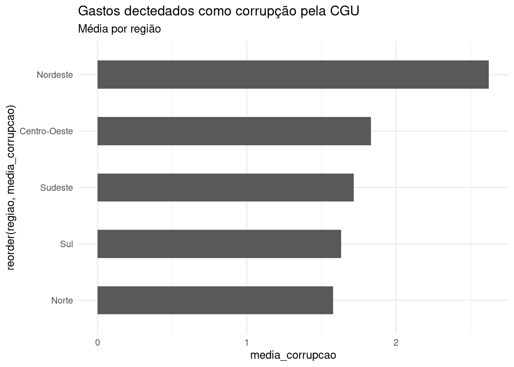

library(rio)
dados <- import("carnes_lupu_2015_audits.dta")Aula 4
Documentos
Introdução
Começamos esse curso focando em algumas das coisas que o R faz de melhor: leitura, manipulação e análise de dados. Aliado ao tidyverse, vimos que essas tarefas podem ser resumidas em verbos que, combinados, executam complexas sequências de operações. Carregamos arquivos; selecionamos variáveis e observações, criamos e alteramos outras; cruzamos bancos, os reordenamos; entre outros. Falta aprendermos a reportar resultados. É isso o que essa aula cobre, amarrando o conteúdo das anteriores.
Combinando bases de dados
Para essa parte, vamos carregar os dados de investigações da CGGU em municípios brasileiros:
Nosso objetivo agora será produzir algumas análises simples – que possam ser exportadas para um arquivo em Word, por exemplo – com estatísticas descritivas para as cinco regiões do país ou para os estados. Para tanto, precisamos superar um problema: a falta de uma variável que indique o estado (UF) ou a regão de cada município na base de Carnes e Lupu (2016).
Uma solução para esse problema da falta de informações sobre regiões na base salva em dados é pegar essa informação de outra base. Dizendo de outra forma, se tivermos outra base que indique a UF e região dos municípios da nossa base original, podemos tentar combiná-las para compartilhar as informações faltantes.
Uma candidata a esse papel pode ser a base a seguir, que tem variáveis que indicam o código do IBGE de todos os municípios do Brasil e, além disso, indica a UF de cada um em outra variável:
library(tidyverse)
ufs <- read_delim("https://raw.githubusercontent.com/datasets-br/city-codes/master/data/dump_etc/municipiosAreas_ibge2018.csv")Rows: 5572 Columns: 4
── Column specification ────────────────────────────────────────────────────────
Delimiter: ","
chr (2): UF, nome_2018
dbl (2): cod_ibge, area_km2
ℹ Use `spec()` to retrieve the full column specification for this data.
ℹ Specify the column types or set `show_col_types = FALSE` to quiet this message.Com as duas bases carregadas, para combiná-las usaremos outra das inúmeras funcionalidades do tidyverse: joins.
joins
Resumidamente, joins são operações que combinam linhas de duas tabelas baseadas em uma ou mais variáveis em comum – no nosso exemplo, tanto dados quanto ufs têm variáveis com o código do IBGE dos municípios, o que podemos usar pra identificar quais municípios de uma base tem correspondência na outra.
Existem vários tipos de joins, mas nos concentraremos em três deles: left_join, full_join e inner_join. Um resumo de cada um:
left_join: inclui todas as linhas da primeira tabela e as linhas correspondentes da segunda tabela; se uma linha da primeira tabela não tiver uma correspondência na segunda, nenhuma nova informação é adicionada nessa linha; linhas da segunda tabela sem correspondência na primeira são descartadasfull_join: inclui todas as linhas de ambas as tabelas; linhas das duas tabelas sem correspondência são mantidasinner_join: inclui apenas as linhas que possuem correspondência em ambas as tabelas
Para deixar as coisas mais concretas, vamos usar como exemplo duas tabelas pequenas e fictícias como essas aqui, abaixo:
| id_city | x |
|---|---|
| 1 | 20 |
| 2 | 56 |
| 3 | 23 |
| cod_ibge | uf |
|---|---|
| 2 | “AC” |
| 3 | “SP” |
| 4 | “RJ” |
A seguir é exibido o que aconteceria ao usar cada um dos joins descritos para combinar as duas tabelas, A e B. Com left_join, todas as linhas tabela A são mantidas, mas a primeira linha (id_city == 1) fica sem correspondência; com full_join, todas as linhas das duas tabelas são mantidas, mas a primeira e a última ficam com informações faltando; finalmente, com inner_join ficamos apenas com duas linhas, as que existem nas duas bases.
| id_city | x | cod_ibge | uf |
|---|---|---|---|
| 1 | 20 | ||
| 2 | 56 | 2 | “SP” |
| 3 | 23 | 3 | “RJ” |
| id_city | x | cod_ibge | uf |
|---|---|---|---|
| 1 | 20 | ||
| 2 | 56 | 2 | “AC” |
| 3 | 23 | 3 | “SP” |
| 4 | “RJ” |
| id_city | x | cod_ibge | uf |
|---|---|---|---|
| 2 | 56 | 2 | “SP” |
| 3 | 23 | 3 | “RJ” |
Usando o tidyverse, implementamos joins passando o nome das duas bases e as variáveis em comum (as chaves):
base_final <- left_join(dados, ufs, by = join_by(id_city == cod_ibge))
base_final# A tibble: 1,199 × 21
party_name age college female term id_city broad narrow fraction_broad
<chr> <dbl> <dbl> <dbl> <dbl> <dbl> <dbl> <dbl> <dbl>
1 "PARTIDO DA S… 47 1 0 2001 1200013 1 0 0.953
2 "PARTIDO PROG… 38 1 0 2001 1200252 0 0 0
3 "PARTIDO PROG… 52 1 0 2001 1200336 1 1 22.4
4 "PARTIDO DO M… 37 0 0 2001 1200351 0 0 0
5 "PARTIDO DA S… 45 0 0 2001 1200385 0 0 0
6 "PARTIDO DOS … 46 0 0 2001 1200708 1 0 0
7 "PARTIDO DO M… 47 0 0 2001 2700102 1 1 5.80
8 "PARTIDO SOCI… 47 1 0 2001 2700706 1 1 5.66
9 "PARTIDO PROG… 58 0 0 2001 2701407 1 0 0
10 "PARTIDO DA F… 66 0 0 2001 2701902 1 0 0
# ℹ 1,189 more rows
# ℹ 12 more variables: fraction_narrow <dbl>, pop <dbl>, literacy <dbl>,
# urb <dbl>, income <dbl>, regions <dbl>, close <dbl>, closenocollege <dbl>,
# closecollege <dbl>, UF <chr>, nome_2018 <chr>, area_km2 <dbl>No código acima, declaramos que quais variáveis são comuns nas duas bases (isto é, quais têm valores com correspondentes em uma e outra bases) com a função join_by, usando o nome das variáveis iguais e usando ==. Para o caso de inner_join (o mesmo vale para full_join), o código é praticamente o mesmo:
inner_join(dados, ufs, by = join_by(id_city == cod_ibge))# A tibble: 1,199 × 21
party_name age college female term id_city broad narrow fraction_broad
<chr> <dbl> <dbl> <dbl> <dbl> <dbl> <dbl> <dbl> <dbl>
1 "PARTIDO DA S… 47 1 0 2001 1200013 1 0 0.953
2 "PARTIDO PROG… 38 1 0 2001 1200252 0 0 0
3 "PARTIDO PROG… 52 1 0 2001 1200336 1 1 22.4
4 "PARTIDO DO M… 37 0 0 2001 1200351 0 0 0
5 "PARTIDO DA S… 45 0 0 2001 1200385 0 0 0
6 "PARTIDO DOS … 46 0 0 2001 1200708 1 0 0
7 "PARTIDO DO M… 47 0 0 2001 2700102 1 1 5.80
8 "PARTIDO SOCI… 47 1 0 2001 2700706 1 1 5.66
9 "PARTIDO PROG… 58 0 0 2001 2701407 1 0 0
10 "PARTIDO DA F… 66 0 0 2001 2701902 1 0 0
# ℹ 1,189 more rows
# ℹ 12 more variables: fraction_narrow <dbl>, pop <dbl>, literacy <dbl>,
# urb <dbl>, income <dbl>, regions <dbl>, close <dbl>, closenocollege <dbl>,
# closecollege <dbl>, UF <chr>, nome_2018 <chr>, area_km2 <dbl>Agora, tendo incorporado a sigla dos estados da base ufs na base dados, conseguimos saber a média o percentual de recursos examinados pela CGU e que foram considerados como envoltos em corrupção (na variável fraction_narrow) por UF. Para isso, basta usar group_by e summarise conjuntamente na base_final que criamos a partir da combinação de duas outras:
base_final %>%
group_by(UF) %>%
summarise(media_corrupcao = mean(fraction_narrow, na.rm = T))# A tibble: 26 × 2
UF media_corrupcao
<chr> <dbl>
1 AC 2.32
2 AL 2.38
3 AM 2.28
4 AP 0.221
5 BA 4.36
6 CE 1.36
7 ES 1.02
8 GO 1.34
9 MA 1.84
10 MG 1.82
# ℹ 16 more rows# U
# 'fraction_narrow'; na.rm = T ignora esses valoresUsamos na.rm = T acima porque temos missings na variavel fraction_narrow. na.rm = TRUE desconsidera esses missings no cálculo da média.
A mesma informação em um gráfico, para facilitar a análise:
corrupcao_por_uf <- base_final %>%
group_by(UF) %>%
summarise(media_corrupcao = mean(fraction_narrow, na.rm = T))
ggplot(corrupcao_por_uf, aes(y = reorder(UF, media_corrupcao), x = media_corrupcao)) +
geom_col(width = 0.5) +
theme_minimal() +
labs(title = "Gastos dectedados como corrupção pela CGU",
subtitle = "Média por UF")
Usamos também reorder para ordernar as barras: o que essa função faz é ordenar a posição dos textos da primeira variável em função dos valores da segunda variável.
Alterando variáveis
Às vezes, mesmo combinando bases ainda assim não conseguiremos alguma informação que precisamos – como no caso da variável que indique a região do país na base dados. No entanto, aqui podemos criar essa variável a partir da informação sobre estados contida na variável UF da base ufs e, nesse tipo de operação, as funções case_when e ifelse são muito úteis.
Para criar uma nova variável chamada “região” a partir das siglas dos estados na variável UF, podemos usar mutate junto de case_when da seguinte forma:
base_final <- base_final %>%
mutate(regiao = case_when(
UF %in% c("AC", "AP", "AM", "PA", "RO", "RR", "TO") ~ "Norte",
UF %in% c("AL", "BA", "CE", "MA", "PB", "PE", "PI", "RN", "SE") ~ "Nordeste",
UF %in% c("DF", "GO", "MT", "MS") ~ "Centro-Oeste",
UF %in% c("ES", "MG", "RJ", "SP") ~ "Sudeste",
UF %in% c("PR", "RS", "SC") ~ "Sul",
TRUE ~ "NA"
))O código não é intuitivo e merece explicações. Em primeiro lugar, nitidamente estamos criando uma variável, regiao, mas ela é o resultado da função case_when, que usamos para verificar em qual das condições a variável UF se enquadra. Particularmente, usamos %in% para verificar se o valor de UF está em algum dos estados listados e, quando uma condição é atendida, case_when atribui o nome da região correspondente, que indicamos depois do símbolo ~. A última linha TRUE ~ "NA" serve como uma condição padrão, caso a UF não esteja em nenhuma das listas de estados.
Poderíamos adaptar o exemplo pra classificar apenas estados como pertencentes ou não ao Sudeste:
base_final %>%
mutate(regiao = case_when(
UF %in% c("ES", "MG", "RJ", "SP") ~ "Sudeste",
TRUE ~ "Outras regiões"
))# A tibble: 1,199 × 22
party_name age college female term id_city broad narrow fraction_broad
<chr> <dbl> <dbl> <dbl> <dbl> <dbl> <dbl> <dbl> <dbl>
1 "PARTIDO DA S… 47 1 0 2001 1200013 1 0 0.953
2 "PARTIDO PROG… 38 1 0 2001 1200252 0 0 0
3 "PARTIDO PROG… 52 1 0 2001 1200336 1 1 22.4
4 "PARTIDO DO M… 37 0 0 2001 1200351 0 0 0
5 "PARTIDO DA S… 45 0 0 2001 1200385 0 0 0
6 "PARTIDO DOS … 46 0 0 2001 1200708 1 0 0
7 "PARTIDO DO M… 47 0 0 2001 2700102 1 1 5.80
8 "PARTIDO SOCI… 47 1 0 2001 2700706 1 1 5.66
9 "PARTIDO PROG… 58 0 0 2001 2701407 1 0 0
10 "PARTIDO DA F… 66 0 0 2001 2701902 1 0 0
# ℹ 1,189 more rows
# ℹ 13 more variables: fraction_narrow <dbl>, pop <dbl>, literacy <dbl>,
# urb <dbl>, income <dbl>, regions <dbl>, close <dbl>, closenocollege <dbl>,
# closecollege <dbl>, UF <chr>, nome_2018 <chr>, area_km2 <dbl>, regiao <chr>Mas, nesse caso particular, ifelse é mais adequada – ela justamente serve para testar uma única condição e, se ela é verdadeira, retorna um valor; caso não, retorna outro:
base_final %>%
mutate(regiao = ifelse(UF %in% c("ES", "MG", "RJ", "SP"), "Sudeste", "Outros"))# A tibble: 1,199 × 22
party_name age college female term id_city broad narrow fraction_broad
<chr> <dbl> <dbl> <dbl> <dbl> <dbl> <dbl> <dbl> <dbl>
1 "PARTIDO DA S… 47 1 0 2001 1200013 1 0 0.953
2 "PARTIDO PROG… 38 1 0 2001 1200252 0 0 0
3 "PARTIDO PROG… 52 1 0 2001 1200336 1 1 22.4
4 "PARTIDO DO M… 37 0 0 2001 1200351 0 0 0
5 "PARTIDO DA S… 45 0 0 2001 1200385 0 0 0
6 "PARTIDO DOS … 46 0 0 2001 1200708 1 0 0
7 "PARTIDO DO M… 47 0 0 2001 2700102 1 1 5.80
8 "PARTIDO SOCI… 47 1 0 2001 2700706 1 1 5.66
9 "PARTIDO PROG… 58 0 0 2001 2701407 1 0 0
10 "PARTIDO DA F… 66 0 0 2001 2701902 1 0 0
# ℹ 1,189 more rows
# ℹ 13 more variables: fraction_narrow <dbl>, pop <dbl>, literacy <dbl>,
# urb <dbl>, income <dbl>, regions <dbl>, close <dbl>, closenocollege <dbl>,
# closecollege <dbl>, UF <chr>, nome_2018 <chr>, area_km2 <dbl>, regiao <chr>Com a variável região que criamos, agora podemos repetir a análise sobre a corrupção detectada por região:
corrupcao_por_regiao <- base_final %>%
group_by(regiao) %>%
summarise(media_corrupcao = mean(fraction_narrow, na.rm = T))
ggplot(corrupcao_por_regiao, aes(y = reorder(regiao, media_corrupcao), x = media_corrupcao)) +
geom_col(width = 0.5) +
theme_minimal() +
labs(title = "Gastos dectedados como corrupção pela CGU",
subtitle = "Média por região")
Documentos
O R permite criar uma variedade de documentos, desde relatórios em PDF; páginas da web dinâmicas; slides de apresentações (em Power Point, PDF ou mesmo em HTML, como usei na primeira aula); dashboards; artigos científicos (com ABNT ou com outro tipo de padronização, como APA); livros inteiros. Isso é feito principalmente por meio do pacote rmarkdown e do [pandoc], um software open source que serve para converter arquivos de um formato a outro.1
Para essa parte final do curso, precisaremos, portanto, instalar mais um pacote:
install.packages("rmarkdown")Rmarkdown
RMarkdown é uma extensão do formato Markdown que permite incorporar código em R (na verdade, código de muitas outras linguagens, como Python e SQL) em um documento de texto. Quando este documento RMarkdown é processado pelo R – mais precisamente, por outro pacote chamado knitr –, códigos são executados, gráficos e outros resultados são incorporados em um documento intermediário (Markdown) e este é jogado para o pandoc, que o converte para vários outros formatos. Aqui uma ilustração do processo:

Documentos RMarkdown incluem metadados (como o título do documento, autor, data e formato de saída), texto e blocos de código em R, chamados de chunks. Esses blocos de código podem ser especificados com {r}, seguidos por opções opcionais (como eval = FALSE para não avaliar um bloco de código, por exemplo) entre parênteses. Por exemplo:
```{r, echo=FALSE}
# Código a ser executado
```No exemplo acima, o bloco de código em R é definido por três crases seguidas de {r} e algumas opções (neste caso, echo=FALSE, que impede que o código seja mostrado no documento final). O bloco de código termina com três crases.
O Markdown em si é só uma linguagem de marcação de texto que permite adicionar formatação, como títulos, listas, links, imagens, tabelas e assim por diante, a um texto. Em Markdown, usamos # para títulos de primeiro nível, ## para títulos de segundo nível, e assim continuamente até títulos de nível 6. Um resumo das marcações principais pode ser visto aqui:
Dados
Nesta restante da aula, trabalharemos com um banco de dados sobre a relação entre a cobertura do programa de transferência condicional de renda Bolsa Família e resultados eleitorais em 5.564 municípios brasileiros. Esses dados foram usados em When Payouts Pay Off: Conditional Cash Transfers and Voting Behavior in Brazil 2002–10. O banco está no arquivo bolsafamiliadataset.dta.
# Carrega os pacotes
library(tidyverse)
library(rio)
# Carrega o banco
bolsa <- import("bolsafamiliadataset.dta")Com esse código, faremos um processo interativo, em aula, para criar os seguintes tipos de documento:
- Slides de Power Point
- Slides HTML
- Artigo científico